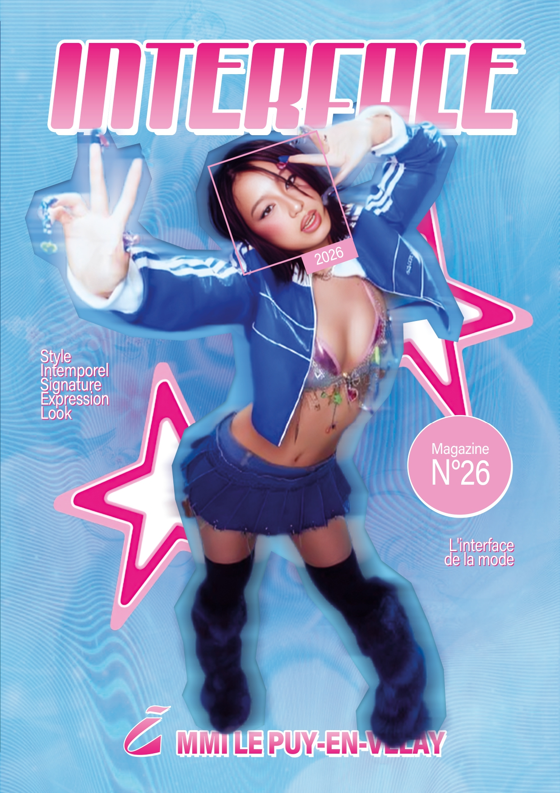
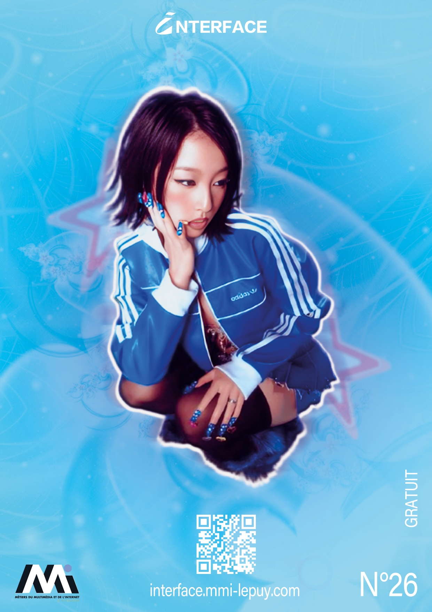

Le Magazine Interface, c'est quoi ? ✧˖°.
Interface est le magazine étudiant du département des Métiers du Multimédia et de l’Internet (MMI) de l’IUT du Puy-en-Velay. Ce projet éditorial met en avant la créativité, la curiosité et le savoir-faire des étudiants du département, sur des thèmes variant chaque année. Il est gratuit et distribué localement.
Contexte du projet ✧˖°.
‧˚ʚ Ce projet consistait à concevoir la couverture et la quatrième de couverture du magazine INTERFACE (N°26) de l'IUT MMI du Puy-en-Velay. L'objectif créatif était de scénariser visuellement le thème de cette année, la Mode, à travers un support éditorial percutant et mémorisable.
‧˚ʚ Ce projet m'a permis de développer mes compétences en direction artistique, en design éditorial et en mise en page de magazine. J'ai également renforcé ma maîtrise technique d'Adobe Photoshop pour la composition graphique, ainsi que ma capacité à traduire une veille créative en un univers visuel cohérent.
Démarche & Réalisation ✧˖°.
‧˚ʚ Après avoir analysé les tendances contemporaines de la mode, j’ai sélectionné et détouré des visuels clés pour structurer ma composition. J'ai développé une identité forte en associant des couleurs contrastées (bleu électrique et rose fuchsia) sur un fond texturé évoquant une interface numérique, aboutissant à une esthétique résolument rétro-futuriste. Pour finir, j'ai architecturé la quatrième de couverture de manière épurée en y intégrant harmonieusement les éléments obligatoires : logo, QR code interactif et mentions légales du MMI.
Rendus ✧˖°.


Ma 1ère et ma 4ème de couverture pour le magazine étudiant Interface qui ma value la 3ème place lors du vote du choix final par toute l'université. Utilisation de Adobe Photoshop.